Original
Noam Eliaz, Noah Metoki. Biomaterials and Corrosion Lab, Department of Materials Science and Engineering, Tel-Aviv University, Ramat Aviv 6997801, Israel.
中文
作者 Noam Eliaz、Noah Metoki,特拉维夫大学材料科学与工程系生物材料与腐蚀实验室(以色列拉马特阿维夫)。
Calcium Phosphate Bioceramics: A Review of Their History, Structure, Properties, Coating Technologies and Biomedical Applications
磷酸钙生物陶瓷:历史、结构、性质、涂层技术与生物医学应用综述
Noam Eliaz, Noah Metoki. Biomaterials and Corrosion Lab, Department of Materials Science and Engineering, Tel-Aviv University, Ramat Aviv 6997801, Israel.
作者 Noam Eliaz、Noah Metoki,特拉维夫大学材料科学与工程系生物材料与腐蚀实验室(以色列拉马特阿维夫)。
| 锚点 | 原式编号 | 页码 | 说明 |
|---|---|---|---|
| E001 | Eq. (1) | p.10 | 扩展德拜–休克尔(Debye–Hückel)平均活度系数 |
| E002 | Eq. (2) | p.10 | 离子强度 I 的定义 |
| E003 | Eq. (3) | p.10 | 饱和指数 SI 的定义 |
| E004 | Eq. (4) | p.19 | OCP 水解为 HAp 的反应 |
| E005 | Eq. (5) | p.49 | 磷酸第一步解离(pK₁) |
| E006 | Eq. (6) | p.49 | 磷酸第二步解离(pK₂) |
| E007 | Eq. (7) | p.49 | 磷酸第三步解离(pK₃) |
| E008 | Eq. (8) | p.49 | HAp 生成(碱性,PO₄³⁻) |
| E009 | Eq. (9) | p.49 | HAp 由 CaHPO₄ 生成 |
| E010 | Eq. (10) | p.49 | HAp 生成(HPO₄²⁻) |
| E011 | Eq. (11) | p.49 | OCP 生成(PO₄³⁻) |
| E012 | Eq. (12) | p.49 | OCP 生成(HPO₄²⁻) |
| E013 | Eq. (13) | p.49 | H₂PO₄⁻ 吸附羟化 |
| E014 | Eq. (14) | p.49 | H₂PO₄⁻ 电化学还原(2e⁻) |
| E015 | Eq. (15) | p.49 | H₂PO₄⁻ 电化学还原生成 PO₄³⁻ |
Calcium phosphate (CaP) bioceramics are widely used in the field of bone regeneration, both in orthopedics and in dentistry, due to their good biocompatibility, osseointegration and osteoconduction. The aim of this article is to review the history, structure, properties and clinical applications of these materials, whether they are in the form of bone cements, paste, scaffolds, or coatings. Major analytical techniques for characterization of CaPs, in vitro and in vivo tests, and the requirements of the US Food and Drug Administration (FDA) and international standards from CaP coatings on orthopedic and dental endosseous implants, are also summarized, along with the possible effect of sterilization on these materials. CaP coating technologies are summarized, with a focus on electrochemical processes. Theories on the formation of transient precursor phases in biomineralization, the dissolution and reprecipitation as bone of CaPs are discussed. A wide variety of CaPs are presented, from the individual phases to nano-CaP, biphasic and triphasic CaP formulations, composite CaP coatings and cements, functionally graded materials (FGMs), and antibacterial CaPs. We conclude by foreseeing the future of CaPs.
磷酸钙(CaP)生物陶瓷因其良好的生物相容性、骨整合(osseointegration)与骨传导(osteoconduction)能力,在骨科与牙科的骨再生领域被广泛使用。本文旨在综述这些材料的历史、结构、性质与临床应用,无论其形态为骨水泥、膏体、支架还是涂层。文中还总结了 CaP 表征的主要分析技术、体外与体内试验,以及美国食品药品监督管理局(FDA)与国际标准对骨科和牙科植入体 CaP 涂层的要求,并讨论了灭菌对这些材料可能产生的影响。CaP 涂层技术被系统归纳,重点放在电化学工艺上。文中讨论了生物矿化中瞬态前驱相形成的理论,以及 CaP 的溶解与再沉淀成骨机制;介绍了从单一物相到纳米 CaP、双相与三相 CaP 配方、复合 CaP 涂层与骨水泥、功能梯度材料(FGM)及抗菌 CaP 的多种体系。最后,我们对 CaP 的未来作出了展望。
范围 / Pages: p.1–3
Calcium phosphate (CaP) is the common name of a family of minerals containing calcium cations (Ca²⁺) together with orthophosphate (PO₄³⁻), metaphosphate (PO₃⁻), or pyrophosphate (P₂O₇⁴⁻) anions, and sometimes hydrogen (H⁺) or hydroxide (OH⁻) ions. CaP is the principal form of calcium found in bovine milk and blood. It is the major inorganic constituent of bone (~60 wt % of bone), and the main constituent of tooth enamel (ca. 90%). Calcium phosphates with a Ca/P atomic ratio between 1.5 and 1.67 are called apatites (e.g., hydroxyapatite or fluorapatite). The term apatite was coined in 1786 by German geologist Abraham Gottlob Werner based on the ancient Greek word "apatao", which means "to mislead".
磷酸钙(CaP)是一族矿物的通称,由钙阳离子(Ca²⁺)与正磷酸根(PO₄³⁻)、偏磷酸根(PO₃⁻)或焦磷酸根(P₂O₇⁴⁻)阴离子组成,有时还含有氢离子(H⁺)或氢氧根离子(OH⁻)。CaP 是牛乳和血液中钙的主要存在形式;它是骨的主要无机成分(约占骨质量的 60%),也是牙釉质的主要成分(约 90%)。Ca/P 原子比在 1.5 至 1.67 之间的磷酸钙称为磷灰石(如羟基磷灰石或氟磷灰石)。"磷灰石"(apatite)一词由德国地质学家 Abraham Gottlob Werner 于 1786 年根据古希腊词 "apatao"("欺骗、误导")创造。
The history of CaPs has been reviewed in various articles. The first articles to describe the structure and composition of bones, teeth and other types of calcified tissues appeared in the last quarter of the 17th century. In 1769, the Swedish chemist and metallurgist Johan Gottlieb Gahn discovered the existence of CaP in bones. However, only since this fact was reported by the German-Swedish pharmaceutical chemist Carl Wilhelm Scheele in 1771, has phosphorus been produced from bone ash. In the last decade of the 18th century, the French chemists Antoine François Comte de Fourcroy and Nicolas Louis Vauquelin discovered the existence of acidic CaP, nowadays known as monocalcium phosphate monohydrate (MCPM), monocalcium phosphate anhydrous (MCPA), dicalcium phosphate anhydrous (DCPA, monetite), and dicalcium phosphate dihydrate (DCPD, brushite). The organic-inorganic composite nature of bone has been known since at least 1788.
CaP 的历史已在多篇文章中综述。最早描述骨、牙及其他钙化组织结构与成分的文章出现于 17 世纪最后 25 年。1769 年,瑞典化学家兼冶金学家 Johan Gottlieb Gahn 发现了骨中存在 CaP;但直到 1771 年德裔瑞典制药化学家 Carl Wilhelm Scheele 报道此事后,人们才开始从骨灰中制备磷。18 世纪最后 10 年,法国化学家 Antoine François Comte de Fourcroy 与 Nicolas Louis Vauquelin 发现了酸性磷酸钙的存在,即今天所称的一水磷酸二氢钙(MCPM)、无水磷酸二氢钙(MCPA)、无水磷酸氢钙(DCPA,monetite 三斜磷钙石)与二水磷酸氢钙(DCPD,brushite 透磷钙石)。骨具有有机–无机复合本质这一认识至少可追溯至 1788 年。
Various processes for preparation of calcium-deficient hydroxyapatite (CDHA) were developed by 1807. In 1808, Nicholson already reported the considerable compositional differences between enamel, dentin, and bones. In 1969, hot-pressed HAp powder into dense and useful shapes was reported. This may be the earliest article on the fabrication of CaP implants. In 1971, the first study on preparation of biodegradable porous β-TCP scaffolds was published. In 1973, the first study on preparation and implantation of resorbable and porous CaP (specifically, β-TCP) was published. In 1975, the modern dental application of CaP began: β-TCP was applied both in surgically created periodontal defects and as an adjunct to apical closure in pulpless permanent teeth. In 1979, dense HAp cylinders were used for immediate tooth root replacement.
到 1807 年,已发展出多种制备缺钙羟基磷灰石(CDHA)的工艺。1808 年,Nicholson 便已报道牙釉质、牙本质与骨之间成分上的显著差异。1969 年有报道将热压 HAp 粉末制成致密且有用的形状——这可能是关于 CaP 植入体制备的最早文章。1971 年发表了首项关于制备可生物降解多孔 β-TCP 支架的研究;1973 年发表了首项关于可吸收多孔 CaP(具体为 β-TCP)制备与植入的研究。1975 年,CaP 的现代牙科应用开始:β-TCP 被用于外科创建的牙周缺损,并作为无髓恒牙根尖封闭的辅助材料。1979 年,致密 HAp 圆柱体被用于即刻牙根替代。
范围 / Pages: p.3–8
Bone is the basic unit of the human skeletal system. Bone provides the framework for and bears the weight of the body, protects the vital organs, supports mechanical movement, hosts hematopoietic cells, and maintains iron homeostasis. Bone has a complex, varying arrangement of structures on broad length scales (Figure 1a), which together enables diverse mechanical, biological and chemical functions. It is a hierarchical, complex, functionally graded material (FGM), with inner cancellous and outer cortical bone.
骨是人体骨骼系统的基本单元。骨构成身体的框架并承受体重,保护重要器官,支撑机械运动,容纳造血细胞并维持铁稳态。骨在很宽的长度尺度上具有复杂多变的层级结构(图 1a),由此实现多样化的力学、生物学与化学功能。它是一种层级化、复杂的功能梯度材料(FGM),由内部松质骨与外部皮质骨构成。
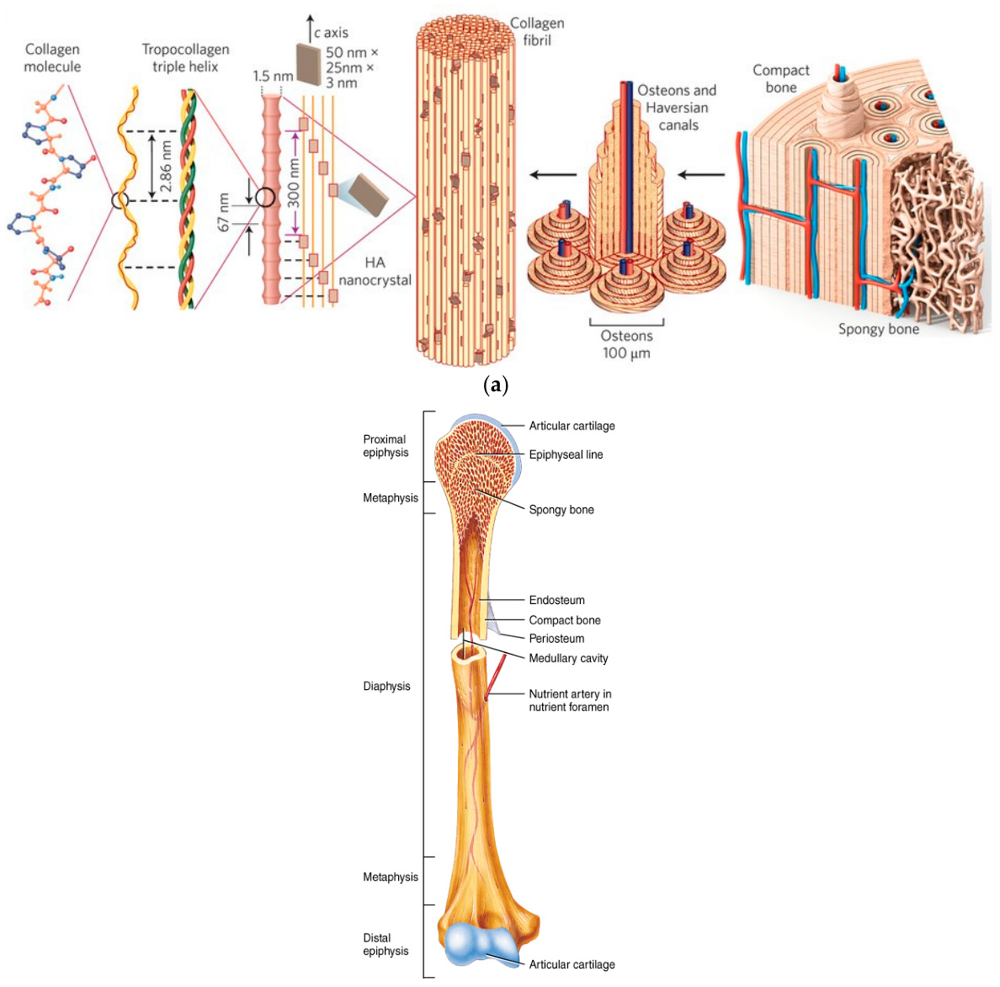
On the macroscopic level, bones can have diverse shapes depending on their respective function. Yet, bones are usually categorized into two types: cortical (or compact) bone, and cancellous (or trabecular) bone, see Figure 1b. Cortical bone forms the outer shell of most bones. These can reach a thickness of between several tenths of a millimetre (in vertebra) to several millimetres or even centimetres (in the mid-shaft of long bones). It is a fairly dense bone, with porosity in the order of 6%. Cancellous bone usually forms inside of bones that are under compressive stress. The interconnecting framework of trabeculae is in a number of combinations, all following basic cellular structures: rod-rod, rod-plate, or plate-plate. Trabecular bone has pores in the order of 80%. The typical thickness of trabeculae is about 50–300 µm, with an orientation that depends on the load distribution in the bone.
在宏观层面,骨依其功能可有多种形状。但骨通常分为两类:皮质(致密)骨与松质(小梁)骨,见图 1b。皮质骨构成多数骨的外壳,厚度可从零点几毫米(椎骨)到数毫米甚至数厘米(长骨骨干中部);它是相当致密的骨,孔隙率约 6%。松质骨通常形成于承受压应力的骨内部,其相互连接的小梁框架存在多种组合方式,均遵循基本的细胞结构形态:杆–杆、杆–板或板–板型。小梁骨孔隙率约 80%,小梁典型厚度约 50–300 µm,取向取决于骨内的载荷分布。
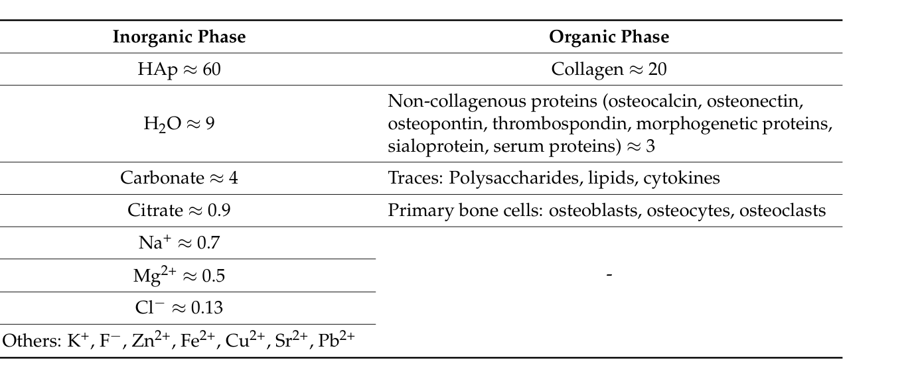
结构化数据 / Structured data:
| 无机相 Inorganic Phase | 含量 (wt %) | 有机相 Organic Phase | 含量 (wt %) |
|---|---|---|---|
| HAp(羟基磷灰石) | ≈60 | Collagen(胶原) | ≈20 |
| H₂O(水) | ≈9 | 非胶原蛋白(骨钙素、骨连素、骨桥蛋白、血小板反应蛋白、骨形态发生蛋白等) | 痕量 |
| Carbonate(碳酸盐) | ≈4 | 多糖、脂质、细胞因子 | 痕量 |
| Citrate(柠檬酸盐) | ≈0.9 | 骨原细胞:成骨细胞、骨细胞、破骨细胞 | — |
| Na⁺ | ≈0.7 | ||
| Mg²⁺ | ≈0.5 | ||
| Cl⁻ | ≈0.13 | ||
| 其他:K⁺、F⁻、Zn²⁺、Fe²⁺、Cu²⁺、Sr²⁺、Pb²⁺ | — |
Due to the nanocrystalline nature of apatite in the bone, various diffraction techniques have not yet given conclusive results regarding its exact structure. ... The chemical composition of bone is given in Table 1. Biological apatites deviate from the stoichiometric HAp, Ca₁₀(PO₄)₆(OH)₂.
由于骨中磷灰石呈纳米晶形态,各种衍射技术至今未对其精确结构给出定论。……骨的化学组成见表 1。生物磷灰石偏离化学计量的 HAp(Ca₁₀(PO₄)₆(OH)₂)。
It is possible to distinguish among three types of bone-implant interfaces: (i) morphological fixation (mechanical interlocking with no direct bond), (ii) biological fixation (direct structural and functional connection between ordered living bone and the surface of a load-carrying implant — osseointegration), and (iii) bioactive fixation (chemical bonding between the implant surface and bone).
可区分三种骨–植入体界面:(i)形态固定(morphological fixation,机械互锁而无直接结合);(ii)生物固定(biological fixation,有序活骨与承重植入体表面之间直接的、结构与功能上的连接——即骨整合 osseointegration);(iii)生物活性固定(bioactive fixation,植入体表面与骨之间的化学键合)。
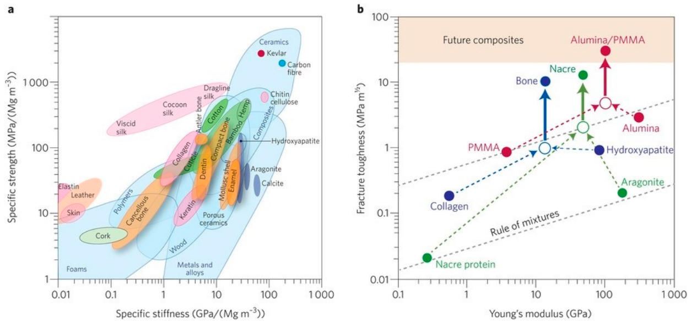
范围 / Pages: p.8–11
Transient amorphous mineral phases have been detected in biomineral systems in different phyla of the animal kingdom. A poorly ordered hydrated iron oxide phase, called ferrihydrite, was identified as a transient precursor mineral phase in the biomineralization forming the tooth of the chiton. After a few days, the ferrihydrite transforms into crystalline magnetite. The formation of the skeleton of sea urchin made of calcite has been reported to begin with the initial deposition of amorphous calcium carbonate. The presence of an abundant ACP phase has also been demonstrated in the newly formed zebrafish fin bony rays. While the structure of bone is reasonably well defined, the process of the bone mineral formation remains controversial. In solutions, ACP is readily converted to stable crystalline phases such as OCP or apatitic products. One biomineralization strategy that has received significant attention is mineralization via transient precursor phases.
在动物界不同门类的生物矿化体系中,均已检测到瞬态无定形矿物相。一种有序度差的水合氧化铁相——水铁矿(ferrihydrite)——被鉴定为石鳖牙齿生物矿化中的瞬态前驱矿物相,数天后水铁矿转变为结晶磁铁矿。据报道,海胆方解石骨骼的形成始于无定形碳酸钙的初始沉积;斑马鱼新生鳍条骨中也已证实存在大量的 ACP 相。尽管骨的结构已相当清楚,骨矿物的形成过程仍存争议。在溶液中,ACP 很容易转变为 OCP 或磷灰石类产物等稳定晶相。一种备受关注的生物矿化策略便是"经由瞬态前驱相矿化"。
Discussion about the possible precursor of apatite in bones arose in the 1970s, after the discovery of a precursor phase in vitro. In the 1960s and the 1970s it was already proposed that ACP serves as a precursor to HAp in vivo. It was argued that the initial ACP precursor undergoes a solid-state transformation to poorly crystalline apatite. Alternatively, it was suggested that the amorphous material observed in early mineralization is a paracrystalline mineral, i.e., it shows loss of long-range order as a result of lattice imperfections. In 1972 it was shown that the first-formed phase in vitro is ACP. This subsequently transforms into OCP, and finally into carbonate apatite.
关于骨中磷灰石可能前驱相的讨论始于 20 世纪 70 年代,此前已在体外发现了前驱相。60–70 年代即有学者提出 ACP 在体内作为 HAp 的前驱体:初始 ACP 前驱体经固态转变成为弱结晶磷灰石;另一种观点认为,早期矿化中观察到的无定形物质是一种"次晶"(paracrystalline)矿物,即因晶格缺陷而丧失长程有序。1972 年证实体外最先形成的相是 ACP,它随后转变为 OCP,最终变为碳酸磷灰石。
范围 / Pages: p.11–13
The supersaturation of different CaP phases in solution is dependent on many parameters, such as the calcium and phosphate ion concentrations in solution, pH and temperature. In order to determine which phases are most likely to precipitate in a specific system, one should first examine which phases are thermodynamically possible. To this aim, dedicated software such as ChemEQL, AQUASIM, and PHREEQC is available and has been applied in studies of both CaP precipitation from solution and electrochemical deposition of CaP coatings. PHREEQC not only can supply the answer to which phase is more supersaturated in solution, but also provides information on the ionic strength I and free ion activities product (IAP) with respect to different CaP phases.
溶液中不同 CaP 相的过饱和度取决于许多参数,如溶液中钙、磷酸根离子浓度、pH 与温度。要判断特定体系中最可能沉淀的相,应首先考察哪些相在热力学上可能存在。为此,可使用 ChemEQL、AQUASIM、PHREEQC 等专用软件,它们已被用于 CaP 从溶液沉淀与 CaP 涂层电化学沉积两类研究。PHREEQC 不仅能回答溶液中哪个相更过饱和,还能给出不同 CaP 相相关的离子强度 I 与自由离子活度积(IAP)。
The saturation index (SI) indicates whether the mineral should dissolve, precipitate, or maintain equilibrium in the specific system. When SI = 0, the solution is in equilibrium. On the other hand, SI < 0 and SI > 0 indicate undersaturation (mineral should dissolve) and supersaturation (mineral should precipitate spontaneously), respectively. At low positive values of SI, a metastable zone may also exist. The key equations in these thermodynamic calculations:
饱和指数(SI)指示矿物在特定体系中应当溶解、沉淀还是保持平衡:SI = 0 时溶液处于平衡;SI < 0 表示欠饱和(矿物应溶解),SI > 0 表示过饱和(矿物应自发沉淀);SI 为较小的正值时还可能存在亚稳区。这些热力学计算的关键方程如下:
阅读提示: 三个公式构成"预测哪种 CaP 相会从电解液/体液中沉淀"的热力学工具链:由(2)算离子强度 →(1)算活度系数 →(3)算各相的 SI。SI 最大且为正的相最先(或最优先)沉淀。
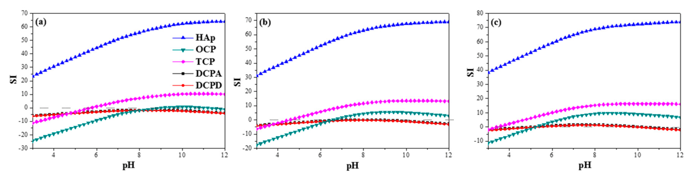
The core mechanism of CaP bioactivity is the partial dissolution and release of ionic products in vivo. When the local concentration of calcium and phosphate ions exceeds the saturation limit, precipitation of a new CaP phase (bone-like apatite) takes place, together with incorporation of biological moieties (collagen, etc.) — this is the "dissolution and reprecipitation as bone" process.
CaP 生物活性的核心机制是其在体内的部分溶解与离子产物释放。当局部钙、磷酸根离子浓度超过饱和极限时,会沉淀出新的 CaP 相(类骨磷灰石),同时并入胶原等生物组分——这就是"溶解与再沉淀成骨"过程。
范围 / Pages: p.13–16
Calcium phosphates are commonly used in medical applications in the form of cements, coatings, scaffolds, and paste. To function properly, a variety of properties may be required, some of which are listed in Table 2. The core mechanism of bioactivity is the partial dissolution and release of ionic products in vivo, elevating the local concentrations of calcium and phosphate ions and precipitating a biological apatite on the surface of the ceramics. All implantable materials must be biocompatible, meaning that they do not elicit local or systemic response of the living system or tissue. All CaP ceramics have been found to be biocompatible.
CaP 在医疗应用中的常见形态为骨水泥、涂层、支架与膏体。要正常发挥作用,需要多种性能,其中部分列于表 2。生物活性的核心机制是体内部分溶解并释放离子产物,从而提高局部钙、磷酸根离子浓度,并在陶瓷表面沉淀出生物磷灰石。所有植入材料都必须具备生物相容性,即不引起活体或组织的局部/全身反应——已证实所有 CaP 陶瓷均有生物相容性。
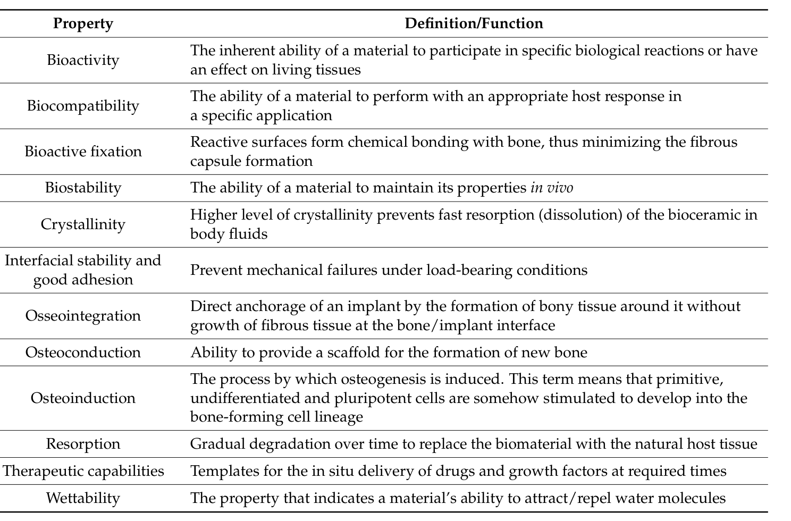
A critical problem that limits wider clinical application of CaPs is their mechanical properties. The hip joints are subjected to an average load of up to three times body weight (3000 N); peak loads experienced during jumping can be as high as 10 times body weight. These stresses are repetitive and fluctuating depending on the nature of the activities. Therefore, all types of potential biomaterials and bioceramics must be durable within a wide variety of conditions. Unfortunately, CaPs are brittle and have low impact resistance and relatively low tensile stress (6 to 10 MPa). The main reason for this is their porosity, which serves as preferred initiation sites for crack propagation. Yet, their compressive strength is fairly good, being higher than that of normal bone.
限制 CaP 更广泛临床应用的关键问题是其力学性能。髋关节承受的平均载荷可达体重的 3 倍(3000 N);跳跃时的峰值载荷可达体重的 10 倍。这些应力随活动类型(站立、坐、慢跑、拉伸、爬坡等)而重复波动。因此,所有潜在生物材料与生物陶瓷必须在多种条件下保持耐久。遗憾的是,CaP 呈脆性,抗冲击性差,抗拉应力较低(6–10 MPa),主因是其孔隙成为裂纹扩展的优先起始点。不过其抗压强度相当好,高于正常骨。
范围 / Pages: p.16–25
In this Section, the properties of CaP phases relevant to clinical use and biomedical applications are summarized. Here, the focus is on each, individual phase. The properties of composites and FGMs are summarized in Sections 9 and 10, respectively. The solid-state phase diagram of the CaP system is relatively unexplored. One of the reasons could be the important role that metastable phases, water, and kinetics have in this system. Water, for example, is essential in defining the thermodynamically stable salts. Nevertheless, few versions of this phase diagram are available. Figure 4 shows one version. The shaded region shows the area of BCP formation. BCP can be prepared by mechanical mixing of HAp and β-TCP, or by a precipitation method. Solid-state reaction, microwave processing, and heating bovine cancellous bone with the addition of (NH₄)₂HPO₄ were also reported to prepare BCP.
本节总结与临床及生物医学应用相关的各 CaP 相的性质,聚焦于每一单独相(复合物与 FGM 的性质分别见第 9、10 节)。CaP 体系的固态相图研究相对不足,原因之一是亚稳相、水与动力学在该体系中起重要作用——例如水对界定热力学稳定盐必不可少。不过已有数个版本的相图(图 4 为其中之一),阴影区为双相磷酸钙(BCP)形成区。BCP 可通过 HAp 与 β-TCP 机械混合或沉淀法制备;也有报道采用固相反应、微波处理,以及添加 (NH₄)₂HPO₄ 加热牛松质骨等途径制备 BCP。
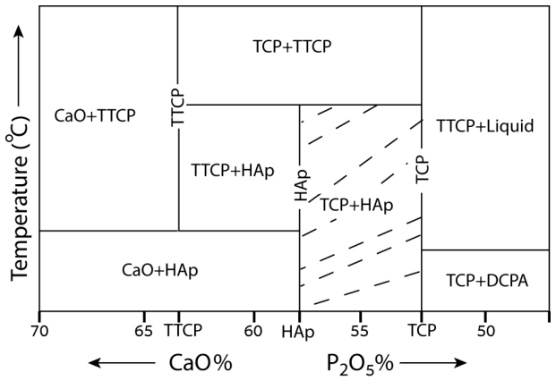
主要 CaP 相族(第 6 节覆盖的单一相): MCPM(6.1)、DCPA(6.2)、DCPD(6.3)、OCP(6.4)、α-TCP(6.5)、β-TCP(6.6)、ACP(6.7)、CDHA(6.8)、HAp(6.9)、TTCP(6.10)及氟磷灰石等。
Table 3 汇总了生物医学应用中主要 CaP 相:
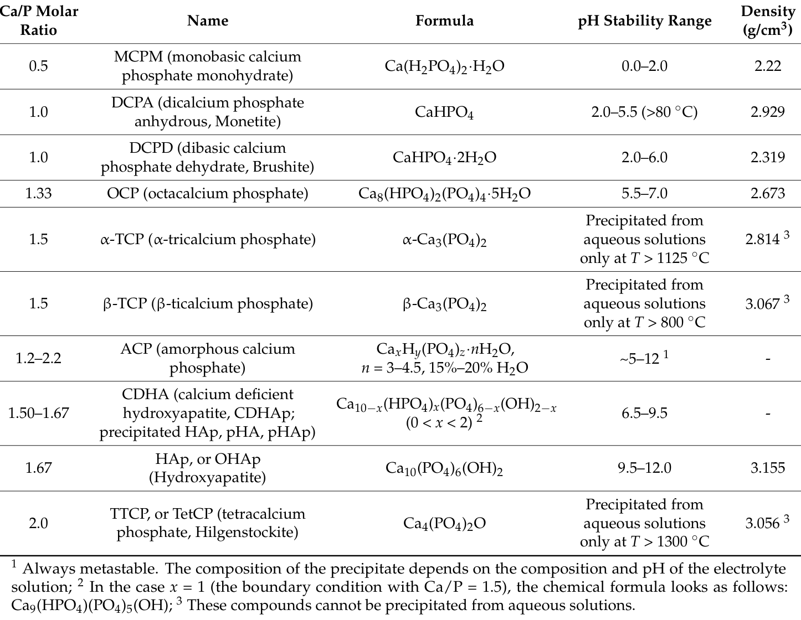
结构化数据(主要行,全文请对照 assets/tables/table3.png):
| Ca/P 摩尔比 | 名称 | 化学式 | pH 稳定范围 | 密度 (g/cm³) |
|---|---|---|---|---|
| 0.5 | MCPM(一水磷酸二氢钙) | Ca(H₂PO₄)₂·H₂O | 0.0–2.0 | 2.22 |
| 1.0 | DCPA(无水磷酸氢钙,三斜磷钙石 Monetite) | CaHPO₄ | 2.0–5.5(>80 °C) | 2.929 |
| 1.0 | DCPD(二水磷酸氢钙,透磷钙石 Brushite) | CaHPO₄·2H₂O | 2.0–6.0 | 2.319 |
| 1.33 | OCP(磷酸八钙) | Ca₈(HPO₄)₂(PO₄)₄·5H₂O | 5.5–7.0 | 2.673 |
| 1.5 | α-TCP(α-磷酸三钙) | α-Ca₃(PO₄)₂ | 仅 >1125 °C 从水溶液沉淀 | 2.814 |
| 1.5 | β-TCP(β-磷酸三钙) | β-Ca₃(PO₄)₂ | 仅 >800 °C 从水溶液沉淀 | 3.067 |
| 1.2–2.2 | ACP(无定形磷酸钙) | CaₓHᵧ(PO₄)z·nH₂O, n = 3–4.5, 15%–20% H₂O | ~5–12 | 1 |
| 1.50–1.67 | CDHA(缺钙羟基磷灰石) | Ca₁₀₋ₓ(HPO₄)ₓ(PO₄)₆₋ₓ(OH)₂₋ₓ (0 < x < 2) | 6.5–9.5 | — |
| 1.67 | HAp/OHAp(羟基磷灰石) | Ca₁₀(PO₄)₆(OH)₂ | 9.5–12.0 | 3.155 |
| 2.0 | TTCP/TetCP(四钙磷酸盐,Hilgenstockite) | Ca₄(PO₄)₂O | 仅 >1300 °C 从水溶液沉淀 | 3.056 |
Table 4(溶解度)与 Table 5(晶体学数据)亦在第 6 节:
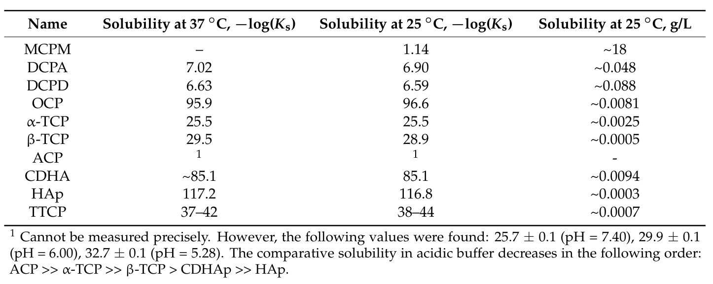
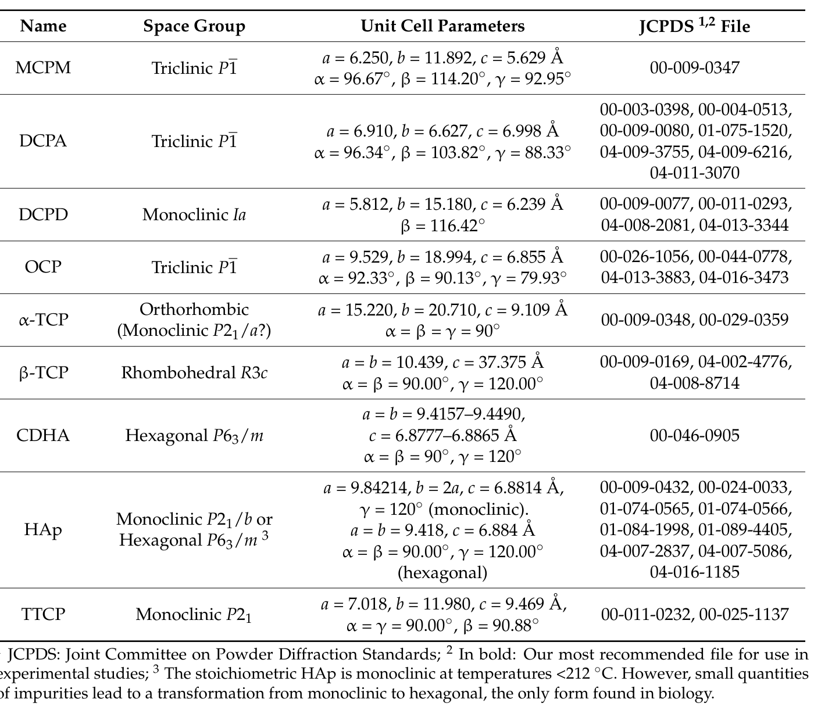
6.4 OCP(磷酸八钙)的水解(见 Eq. 4):
OCP is unstable relative to HAp and tends to hydrolyse according to the reaction:
6.9 HAp(羟基磷灰石):
HAp is considered to be osteoconductive, but not osteoinductive; yet, these properties can be turned via doping, stoichiometry and texturing. HAp is the common mineral found in vertebrate bones. It is also found in mammalian teeth, fish scales, and some other tissues. HAp has a hexagonal crystal structure (space group P6₃/m), with a = b ≈ 9.42 Å and c ≈ 6.88 Å; the unit cell contains two formula units, and the OH⁻ columns run along the c-axis through "channels" of calcium triangles.
HAp 被认为是骨传导性而非骨诱导性的材料,但可通过掺杂、化学计量与织构化来调节这些性质。HAp 是脊椎动物骨中常见的矿物,也见于哺乳动物牙齿、鱼鳞等组织。HAp 为六方晶系(空间群 P6₃/m),a = b ≈ 9.42 Å,c ≈ 6.88 Å;晶胞含两个化学式单元,OH⁻ 沿 c 轴穿过由钙三角形围成的"通道"排成柱列。
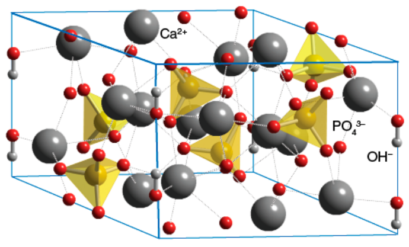
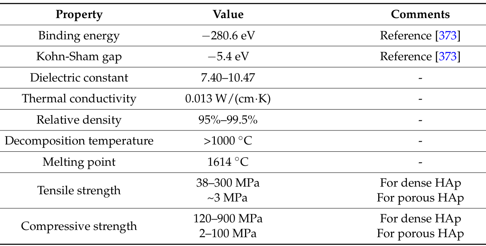
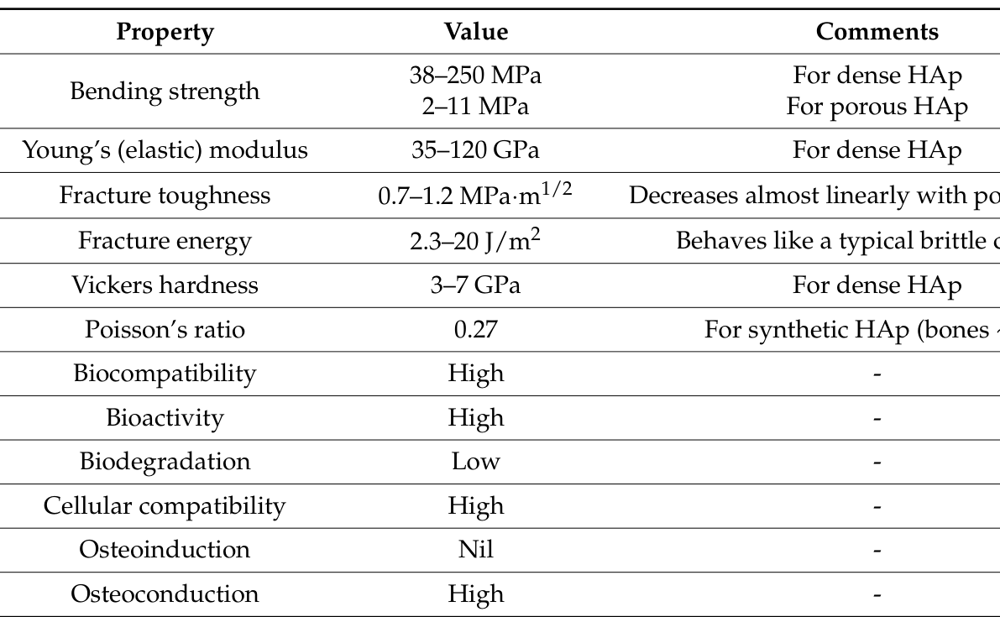
范围 / Pages: p.25–27
Usually, when we refer to the nanoscale, we have in mind dimensional range from 0.1 nm to 100 nm. In comparison, a particle 100 nm to 1 µm in size will be referred to as submicron particle. As described in Section 2, the HAp in bone is nanocrystalline. Moreover, nanoparticles (NPs) smaller than 100 nm have the highest reported efficacy with respect to cellular integration; it has been suggested that these NPs induce responses different from submicron structures, which could imply that nano-HAp, and possibly other nano-CaPs, could form biocompatible surfaces that integrate well with bone tissue.
通常"纳米尺度"指 0.1 nm 至 100 nm;尺寸为 100 nm 至 1 µm 的颗粒则称为亚微米颗粒。如第 2 节所述,骨中的 HAp 是纳米晶。此外,小于 100 nm 的纳米颗粒(NP)据报道在细胞整合方面效率最高;有学者认为这些 NP 诱发的反应不同于亚微米结构,这意味着纳米 HAp(乃至其他纳米 CaP)可能形成与骨组织良好整合的生物相容表面。
Nanoscale HAp has superior functional properties over its microscale counterpart, particularly surface reactivity and ultrafine structure, which are the most imperative properties for tissue-graft interaction upon implantation. Its high surface area-to-volume ratio, superior chemical homogeneity, and microstructural uniformity result in enhanced bone integration and mechanical properties. It has been shown that nano-HAp promotes enhanced osteoblast adhesion, differentiation and proliferation, osteointegration, and deposition of Ca-containing minerals on its surface, compared to conventional micro-HAp, which leads to enhanced formation of new bone tissue within a short period.
纳米 HAp 相比微米 HAp 具有更优越的功能性质,尤其是表面反应性与超细结构——这是植入后组织–移植物相互作用最关键的性质。其高比表面积、优异的化学均匀性与微观结构一致性带来更强的骨整合与力学性能。研究表明,与传统微米 HAp 相比,纳米 HAp 能促进成骨细胞黏附、分化与增殖、骨整合及其表面含钙矿物的沉积,从而在短期内促进新骨组织形成。
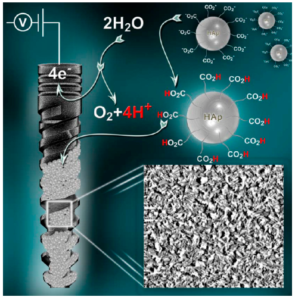
范围 / Pages: p.27–28
CaPs can form biphasic, triphasic, and polyphasic compositions, in which the individual components cannot be separated from each other. The individual phases in such formulations are homogeneously and intimately "mixed" at the submicron level and, therefore, are strongly integrated with each other. Nevertheless, the presence of all individual phases is easily evident in the XRD pattern. As a rule of a thumb, the properties of biphasic, triphasic and polyphasic materials are between those of the constituent phases, and depend on the relative amounts of the ingredients. The Ca/P atomic ratios of BCPs typically fall between those for pure TCP and HAp. Thus, by changing the ratio between the more stable and the more soluble CaPs, it is possible to prepare formulations with adjustable properties.
CaP 可形成双相、三相及多相组成,其中各组分彼此无法分离;各相在亚微米尺度上均匀、紧密地"混合",因而强整合在一起,但所有物相的存在都能在 XRD 图谱中清楚显现。经验上,双相/三相/多相材料的性质介于其组成相之间,并取决于各成分的相对含量。BCP 的 Ca/P 原子比通常介于纯 TCP 与 HAp 之间。因此,通过改变更稳定相与更易溶相之间的比例,可以制备性质可调的配方。
Historically, the term biphasic calcium phosphate (BCP) was coined in 1986 to describe a bioceramic that consisted of a mixture of HAp and β-TCP. Since then, BCP consisting of HAp and β-TCP has been the most studied among all known BCP formulations.
从历史上看,"双相磷酸钙"(BCP)一词于 1986 年提出,用于描述由 HAp 与 β-TCP 混合物组成的生物陶瓷。此后,HAp/β-TCP 型 BCP 一直是所有已知 BCP 配方中研究最多的。
范围 / Pages: p.28–33
In Section 8, mixtures of different CaPs, not necessarily with clear microscopic interfaces, were reviewed. In Section 9, composite materials consisting of one or more CaP phase with other materials, either organic or inorganic, are described. The additional materials could be of biologic origin or synthetic, and they may be incorporated to enhance the mechanical properties or in vivo performance of the CaP-based material. CaP coatings, cements and scaffold have long been integrated with both organic and inorganic materials for various reasons, such as control of the biodegradability and bioactivity, improvement of the mechanical properties or corrosion resistance, encapsulation of drugs or GFs, etc.
第 8 节综述的是不同 CaP 的混合物(不一定有清晰的显微界面);第 9 节则描述由一个或多个 CaP 相与其他有机或无机材料组成的复合材料。附加材料可来自生物来源或人工合成,加入目的常是增强 CaP 基材料的力学性能或体内表现。长期以来,CaP 涂层、骨水泥与支架都因各种原因与有机/无机材料整合,如调控生物降解性与生物活性、改善力学性能或耐蚀性、包封药物或生长因子(GF)等。
范围 / Pages: p.33–35
Functionally graded materials (FGMs) are materials that exhibit either chemical composition gradient or structural gradient within them. This allows obtaining properties that cannot be achieved otherwise, for example exhibiting good biocompatibility—a surface governed property, with good mechanical strength—a bulk governed property. In the case of CaP coatings on metal implants, it can also reduce the failure rate due to delamination of the coating over time as a result of mismatch between the thermal expansion coefficients of the substrate and of the coating.
功能梯度材料(FGM)是指内部具有化学成分梯度或结构梯度的材料,由此可获得其他方式无法同时实现的性能组合——例如良好的生物相容性(表面控制的性能)与良好的机械强度(体相控制的性能)并存。对金属植入体上的 CaP 涂层而言,FGM 还可降低因基体与涂层热膨胀系数失配而随时间发生的涂层剥落失效。
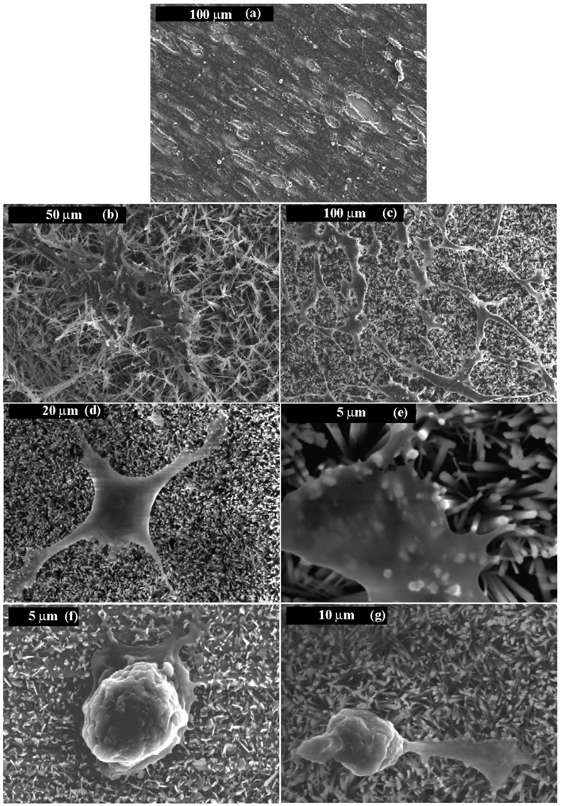
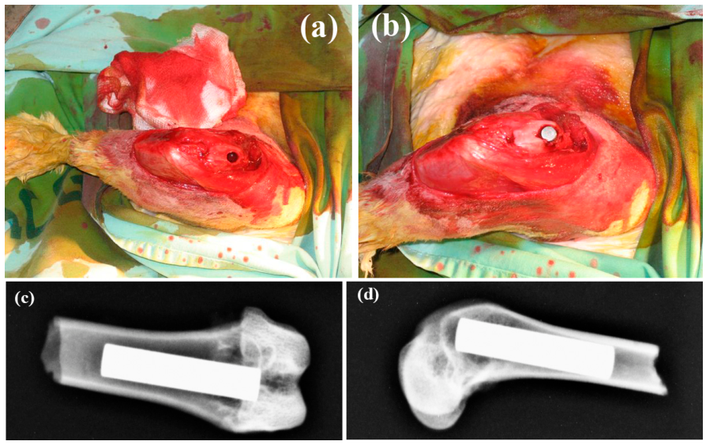
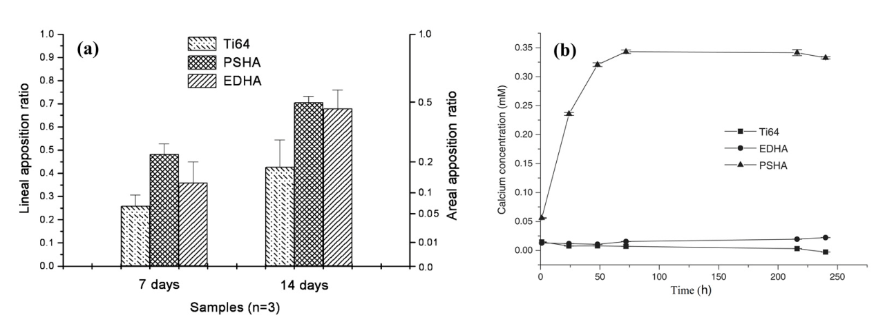
范围 / Pages: p.35–38
One of the major concerns of all implants is the risk of infection, which is estimated in the range of 0.5%–5.0% for total hip arthroplasty. Similarly, in the field of dentistry, a condition well known as "peri-implantitis" is found to be common. It is mainly caused by infection around the implant, which leads to loss of supporting circumferential bone, causing its failure. Although infections associated with prosthetic joints occur less frequently than aseptic loosening failures, they represent the most devastating complication. Implant-associated infections occur either by direct inoculation into the surgical wound during surgery or immediately thereafter (perioperative infection), by microbial spread through blood from a distant focus of infection (haematogenous infection), by direct or lymphogenic spreading from an adjacent infectious focus, or as a result of penetrating trauma (contiguous infection).
所有植入体最主要的顾虑之一是感染风险——全髋关节成形术的感染率估计为 0.5%–5.0%。牙科中常见的"种植体周围炎"(peri-implantitis)也主要由植入体周围感染引起,导致周围支持骨丧失而失败。尽管假体关节相关感染的发生率低于无菌性松动,但却是最具破坏性的并发症。植入体相关感染可发生于:术中或术后早期细菌直接接种入伤口(围手术期感染);细菌经血行从远处感染灶播散(血源性感染);从邻近感染灶直接或经淋巴扩散;以及穿通伤所致(邻近感染)。
范围 / Pages: p.38–39
All implants must be sterilized before implantation in the human body to avoid subsequent infections. The sterilization technique assigned must have minimum adverse effect on the material. Among the methods used to sterilize implants, steam sterilization (autoclaving), dry oven, ethylene oxide (EtO), and isopropanol diluted in water (60–90 vol %), with or without ethanol, are the simplest, cheapest and most commonly available. Yet, these have shown to degrade various CaP phases. Other sterilization methods include gamma irradiation, laser irradiation, ultraviolet (UV) irradiation, and plasma cleaning.
所有植入体在植入人体前必须灭菌以避免感染,所选灭菌技术必须对材料产生尽可能小的不良影响。植入体灭菌方法中,蒸汽灭菌(高压灭菌)、干热、环氧乙烷(EtO)与水稀释异丙醇(60–90 vol%,可含乙醇)最简单、最廉价、最常用;但已证明它们会使多种 CaP 相降解。其他灭菌方法包括 γ 辐照、激光辐照、紫外(UV)辐照与等离子体清洗。
范围 / Pages: p.39–45
Numerous in vitro and in vivo studies have been carried out with CaPs. In vitro tests are commonly used to characterize the bioactivity, biomineralization, cell proliferation and differentiation, protein adsorption, cell toxicity, drug delivery, corrosion behaviour, etc. The re-precipitation of bone and the corrosion of metal and CaP-coated implants are often tested in vitro in SBF. Compositions of selected SBFs are listed in Table 7. As can be noted in this table, the composition of SBF was varied over the years to better match that of human blood plasma. The original SBF, used by Kokubo et al. and Hench et al., lacks the SO₄²⁻ anion.
已有大量 CaP 的体外与体内研究。体外试验常用于表征生物活性、生物矿化、细胞增殖与分化、蛋白吸附、细胞毒性、药物递送、腐蚀行为等。骨再沉淀以及金属/CaP 涂层植入体的腐蚀常以模拟体液(SBF)在体外测试——表 7 列出了多种 SBF 的组成。从表中可见,SBF 的组成多年来不断调整,以更好地匹配人血浆;Kokubo 与 Hench 等使用的原始 SBF 缺少 SO₄²⁻ 阴离子。
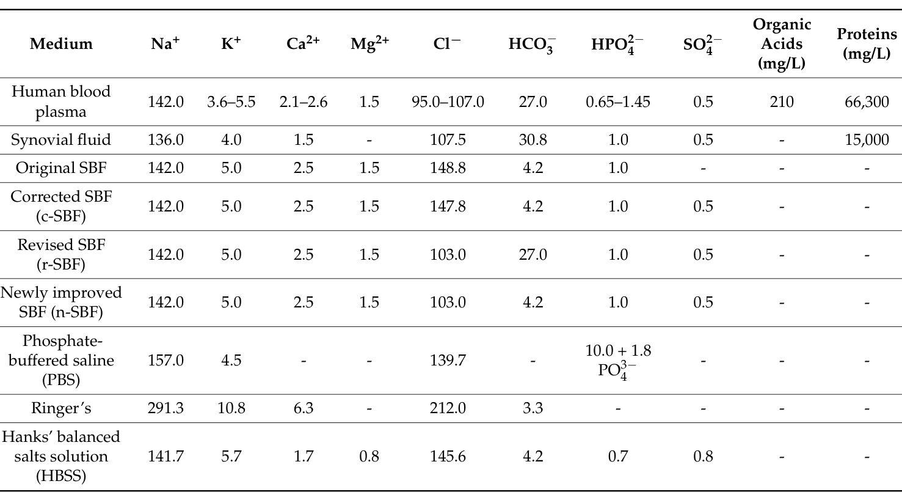
范围 / Pages: p.45–58
In the previous Sections, many references for CaP coatings were given. These could be monolithic, composite, or FGM. A key factor for successful fixation of cementless implants used for joint reconstruction is the establishment of a stable interface between the implant and bone. Coating of the implant with osteoconductive HAp is a well-known method for achieving such fixation. The coating can improve the biocompatibility of orthopedic and dental implants by blocking the diffusion of poisonous elements from the metal into the body, as well as reducing the friction coefficient between the implant and its biological surroundings. HAp is capable of enhancing bone growth across a gap around an implant in both stable and unstable mechanical conditions, and even converting a motion-induced fibrous membrane into a bony anchorage.
前文已给出大量 CaP 涂层文献;这些涂层可为单相、复合或 FGM 型。关节重建用非骨水泥植入体成功固定的关键,在于植入体与骨之间建立稳定界面。用骨传导性 HAp 涂覆植入体是实现该固定的公认方法:涂层可阻挡金属中有毒元素向体内扩散、降低植入体与生物环境的摩擦系数,从而改善骨科与牙科植入体的生物相容性;HAp 还能在稳定与不稳定力学条件下促进骨跨越植入体周围间隙生长,甚至把运动诱导的纤维膜转变为骨性锚固。
Synthetic CaP coatings can be prepared by a variety of processes, such as plasma spraying (PS), high-velocity oxygen-fuel (HVOF) thermal spraying, sputter coating, radio-frequency magnetron sputtering, pulsed laser deposition (PLD), ion-beam deposition, frit enamelling, hot isostatic pressing (HIP), metallo-organic chemical vapour deposition (CVD), derivation from sol-gels, electrophoretic deposition (EPD), chemical deposition, and electrodeposition (ED).
合成 CaP 涂层可通过多种工艺制备,包括:等离子喷涂(PS)、高速氧燃料(HVOF)热喷涂、溅射涂层、射频磁控溅射、脉冲激光沉积(PLD)、离子束沉积、釉料涂搪(frit enamelling)、热等静压(HIP)、金属有机化学气相沉积(CVD)、溶胶-凝胶(sol-gel)衍生、电泳沉积(EPD)、化学沉积与电沉积(ED)。
The deprotonation of dihydrogen phosphate H₂PO₄⁻ to HPO₄²⁻ serves as an important biological buffer system, which operates in the internal fluid of all cells, stabilizing the pH at around 7.21 (in mammals, pH = 6.9–7.4). Thus, the speciation curves of phosphoric acid may aid, at least to some extent, in understanding the effect of pH on the electrochemical deposition of CaPs. At 37 °C, the dissociation constants of phosphoric acid are:
磷酸二氢根 H₂PO₄⁻ 去质子化为 HPO₄²⁻ 构成重要的生物缓冲体系,在所有细胞内液中运行,使 pH 稳定在约 7.21(哺乳动物为 pH 6.9–7.4)。因此,磷酸的形态分布曲线至少在一定程度上有助于理解 pH 对 CaP 电化学沉积的影响。37 °C 下磷酸的解离常数为:
Based on calculations of the limiting current densities of different possible cathodic reactions and calculation of a remarkably high number of electrons transferred in the reaction it was concluded that electrolysis of water plays a key role in the consumption of electrons and rapid increase of the local pH. Some of the possible chemical and electrochemical reactions leading to formation of CaPs in solution are listed below:
基于不同可能阴极反应极限电流密度的计算,以及对反应中转移电子数异常之高的估算,作者得出结论:水的电解在消耗电子与快速升高局部 pH 中起关键作用。溶液中生成 CaP 的部分可能化学反应与电化学反应如下:
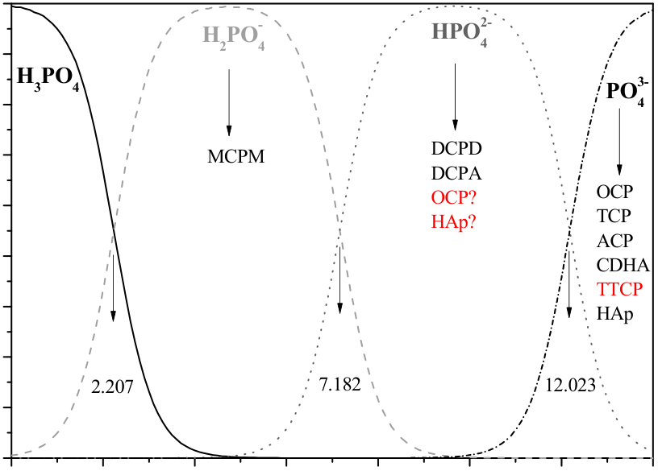
14.x 涂层的黏附与表面预处理:
The adhesion of the coating to the metal substrate is a very important parameter, which affects performance and longevity of the implant. Adhesion failures result in delamination of the coating and loosening of the implant, thus leading to mechanical failure and bone resorption. The US FDA as well as ASTM and ISO standards require an adhesion strength of at least 15 MPa. In order to achieve this value, pre-treatment of the metal surface is sometimes required. Eliaz et al. studied the effect of various combinations of mechanical and chemical surface treatments on the adhesion strength of electrochemically deposited HAp coating on CP-Ti. These surface pre-treatments included: (1) mechanical grinding down to P1000; (2) grinding to P1000 followed by chemical etching in HNO₃/HF solution; (3) grinding to P1000 followed by etching in HNO₃/HF solution and then grit blast; (4) grinding to P1000 followed by etching in HNO₃/HF solution, grit blast and soaking in a stirred solution of 5 M NaOH at 60 °C for approximately 24 h, followed by heat treatment for 1 h at 600 °C and overnight cooling in the furnace; etc.
涂层与金属基体的黏附是非常关键的参数,直接影响植入体的性能与寿命。黏附失效会导致涂层剥落与植入体松动,进而引起力学失效与骨吸收。美国 FDA 及 ASTM、ISO 标准要求黏附强度至少 15 MPa;为达到该值,有时需要对金属表面进行预处理。Eliaz 等研究了不同机械/化学表面处理组合对 CP-Ti 上电沉积 HAp 涂层黏附强度的影响,预处理包括:(1) 机械磨削至 P1000;(2) P1000 磨削后在 HNO₃/HF 溶液中化学蚀刻;(3) P1000 磨削 + HNO₃/HF 蚀刻 + 喷砂;(4) P1000 磨削 + HNO₃/HF 蚀刻 + 喷砂 + 60 °C 5 M NaOH 搅拌溶液浸泡约 24 h,随后 600 °C 热处理 1 h 并随炉冷却过夜;等等。
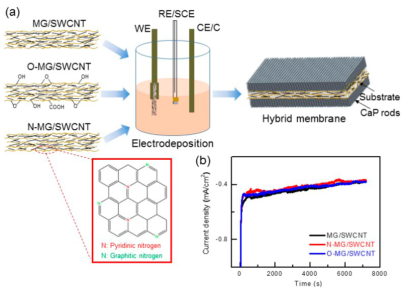
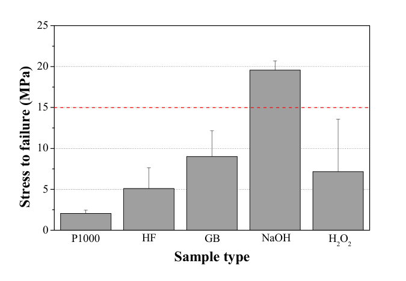
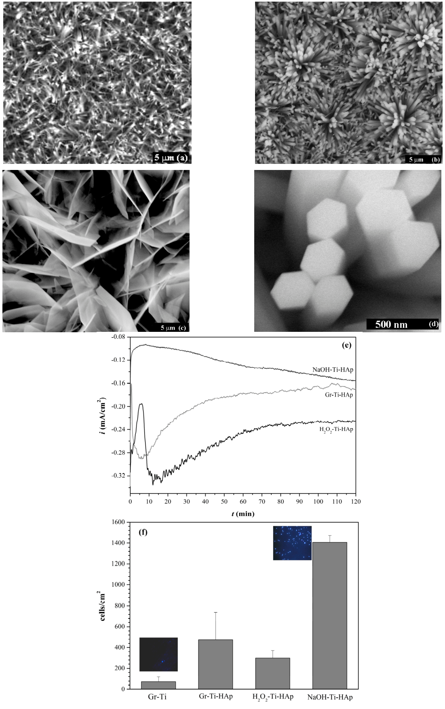
涂层标准要求(表 8):
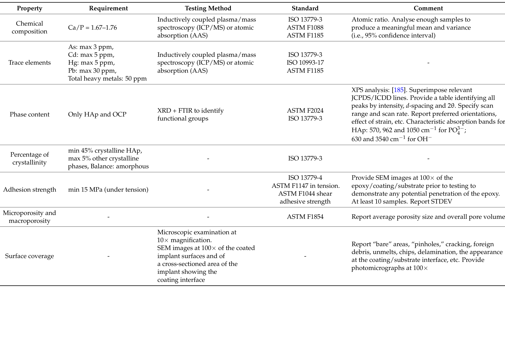
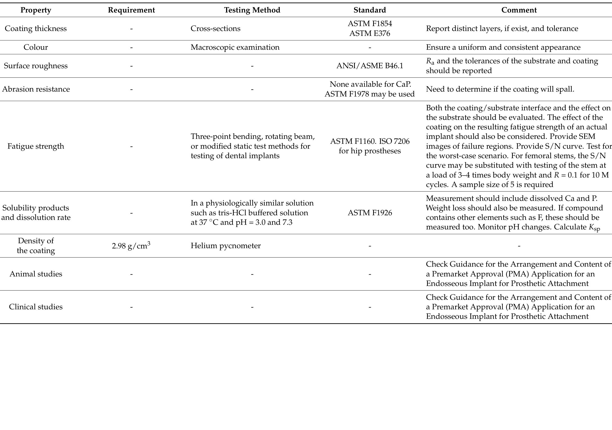
范围 / Pages: p.58–61
One of the main applications of CaPs is for cementless hip implants. Coating the stem's surface with CaP can allow for bone-bone bonding and osteoconduction of the implant. This technique is sometimes called interface bioactive bone cement (IBBC). This approach is also applied on dental implants. Another wide use of CaP is as bone fillers of defects, used in reconstruction surgery. In this case, HAp is proved to be most efficient as it is not resorbable, binds to the bone physicochemically, and is mechanically strong enough. CPCs have shown promise in bone replacement in oral surgery and craniofacial applications. Another use of CPC is in osteonecrotic sites in the body that encourage bone growth. CaP scaffolds, either porous or dense, are used for various applications, such as alveolar ridge augmentation, immediate tooth replacement, maxillofacial reconstruction, burr-hole buttons, etc. Other examples include orbital implants, increment of the hearing ossicles, spine fusion and repair of bone defects.
CaP 的主要应用之一是非骨水泥髋关节假体:在柄表面涂覆 CaP 可实现骨–骨结合与植入体骨传导,该技术有时称为"界面生物活性骨水泥"(IBBC),也用于牙种植体。CaP 的另一广泛用途是重建外科中作为骨缺损填充物——此时 HAp 被证明最有效,因其不可吸收、与骨发生物理化学结合且强度足够。磷酸钙骨水泥(CPC)在口腔外科与颅颌面骨替代方面展现出前景,也用于体内促进骨生长的骨坏死部位。CaP 支架(多孔或致密)用于牙槽嵴增高、即刻牙替换、颌面重建、颅骨钻孔钮等;其他例子包括眶内植入体、听小骨增高、脊柱融合与骨缺损修复。
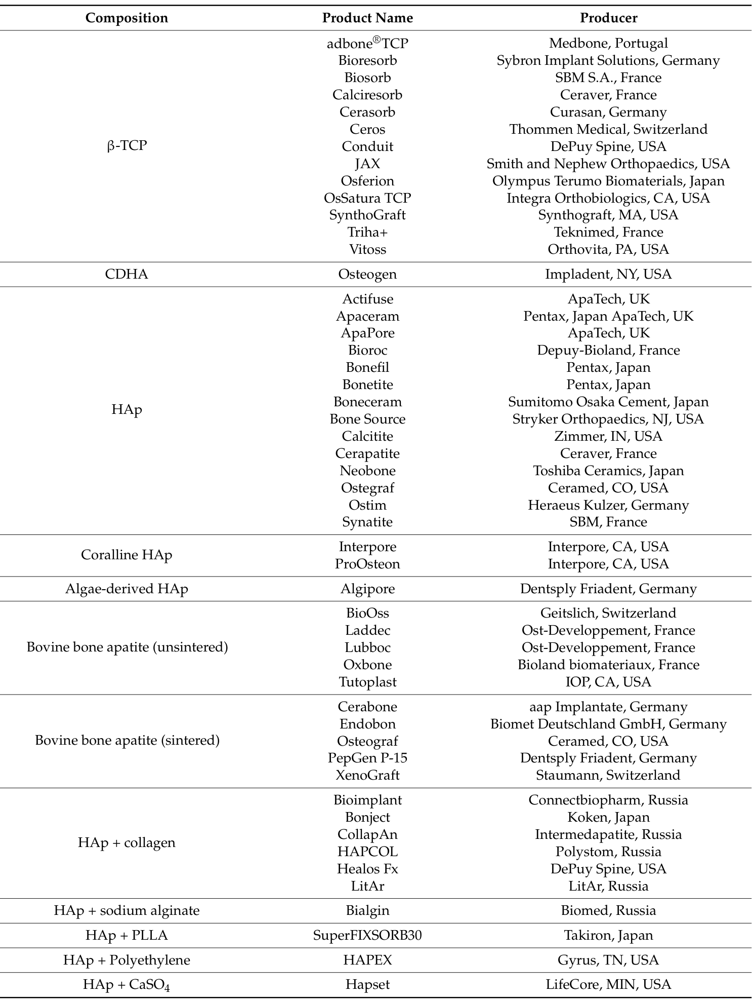
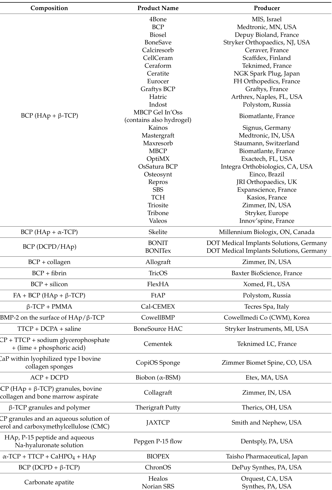
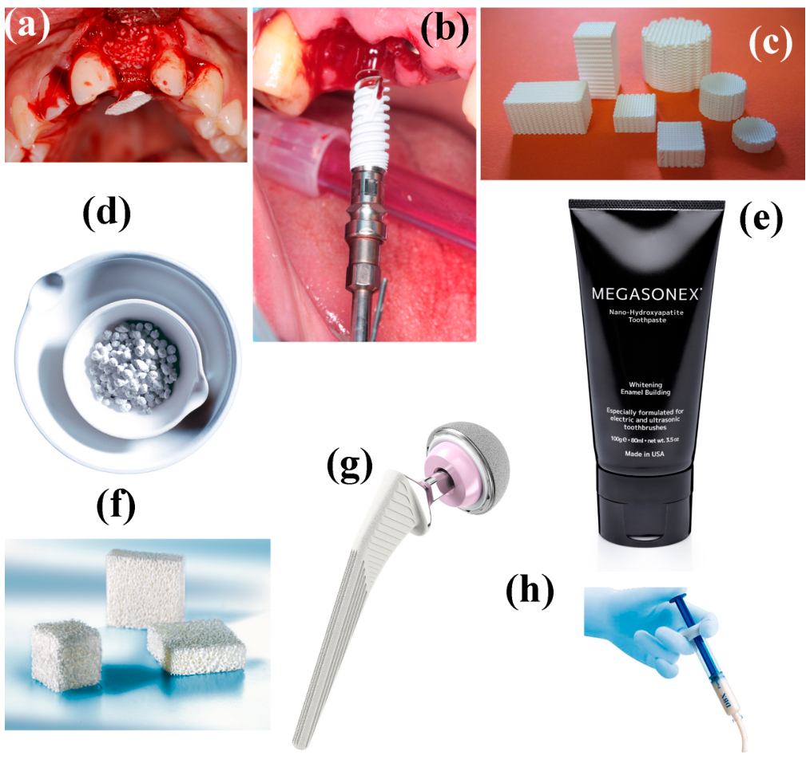
范围 / Pages: p.61–65
Although CaPs have been used in the clinics for more than three decades, some issues that limit their use have not been resolved yet. Some of the major issues seem to be:
尽管 CaP 在临床上已应用三十余年,一些限制其使用的问题仍未解决。主要问题包括:
The figure below demonstrates the versatility, scalability, and manipulation of 3D-printed hyperelastic "bone" (HB).
下图展示了 3D 打印超弹性"骨"(HB)材料的通用性、可规模化性与可加工性。
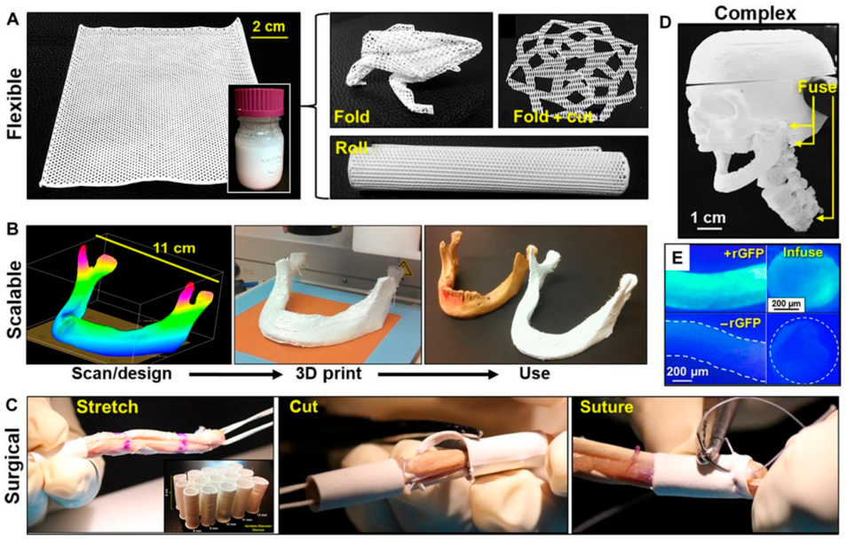
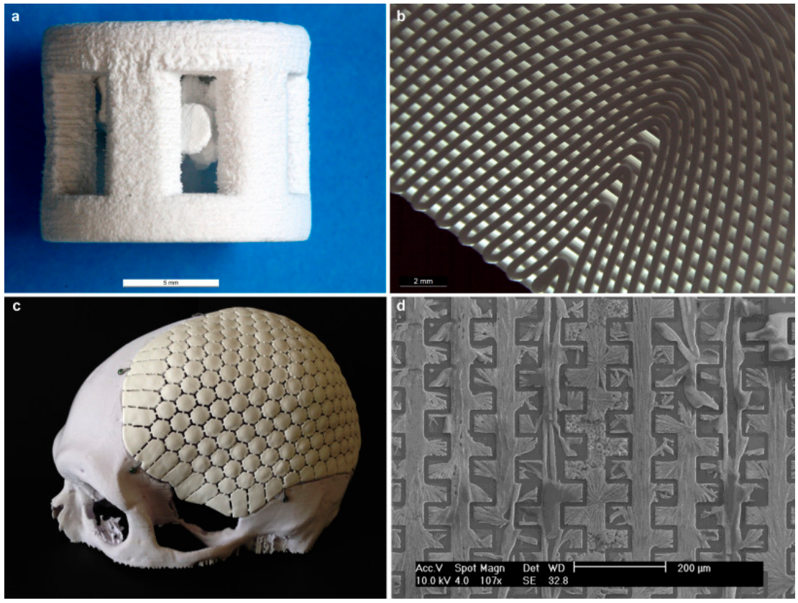
范围 / Pages: p.65–67
Calcium phosphate (CaP) bioceramics are widely used in the field of bone regeneration, both in orthopedics and in dentistry, due to their good biocompatibility, osseointegration and osteoconduction. This article reviews many aspects of CaP bioceramics, in the form of bone cements, paste, scaffolds, and coatings. It starts with a brief historical perspective of their development and uses. Next, it describes the structure, chemistry and mechanical properties of bone. Then, it describes the transient precursor phases that have been observed, both in vitro and in vivo, and the mechanisms of dissolution of CaPs and their reprecipitation as bone. Next, the key requirements from CaPs for medical applications are presented. The structure, properties and applications of CaP-based materials are reviewed, starting with the individual phases as a function of their Ca-to-P atomic ratio, then nano-CaP, biphasic and triphasic formulations, composites and functionally graded materials (FGMs). The antibacterial behaviour of CaPs thanks to incorporation of certain antibacterial agents and the effect of different sterilization processes on CaPs are reviewed. Next, key principles of in vitro and in vivo tests are described. A variety of technologies for coating CaPs are reviewed, focusing on electrochemical processes and the requirements of the US FDA and international standards. Next, a variety of commercial products is listed according to their composition, and major applications are visualized. Finally, key issues in future developments are listed, along with recent developments in additive manufacturing (AM) of CaPs and hyperelastic bone.
磷酸钙(CaP)生物陶瓷因良好的生物相容性、骨整合与骨传导性,被广泛用于骨科与牙科的骨再生,形态涵盖骨水泥、膏体、支架与涂层。本文综述了 CaP 生物陶瓷的诸多方面:先简述其发展与应用的历史;继而描述骨的结构、化学与力学性质;再述体外与体内观察到的瞬态前驱相,以及 CaP 的溶解与再沉淀成骨机制;接着给出医用 CaP 的关键要求;按 Ca/P 原子比由单一相到纳米 CaP、双相与三相配方、复合材料与功能梯度材料(FGM),系统综述了 CaP 基材料的结构、性质与应用;综述了掺入抗菌剂赋予 CaP 的抗菌行为与不同灭菌工艺的影响;描述了体外与体内试验的关键原则;系统归纳了 CaP 涂层技术(聚焦电化学工艺)及美国 FDA 与国际标准的要求;按组成列出多种商业化产品并展示主要应用;最后列出未来发展的关键问题,以及 CaP 增材制造(AM)与超弹性骨的最新进展。
| 规范英文术语 | 中文 | 说明 / 首次展开 |
|---|---|---|
| CaP | 磷酸钙 | calcium phosphate,全文核心术语 |
| HAp / OHAp | 羟基磷灰石 | hydroxyapatite,Ca₁₀(PO₄)₆(OH)₂ |
| CDHA | 缺钙羟基磷灰石 | calcium-deficient hydroxyapatite |
| DCPD | 二水磷酸氢钙(透磷钙石) | brushite,CaHPO₄·2H₂O |
| DCPA | 无水磷酸氢钙(三斜磷钙石) | monetite,CaHPO₄ |
| MCPM / MCPA | 一水/无水磷酸二氢钙 | monocalcium phosphate (mono)hydrate |
| OCP | 磷酸八钙 | octacalcium phosphate,Ca₈H₂(PO₄)₆·5H₂O |
| α-TCP / β-TCP | α-/β-磷酸三钙 | α-/β-tricalcium phosphate |
| TTCP (TetCP) | 四钙磷酸盐 | tetracalcium phosphate,Ca₄(PO₄)₂O |
| ACP | 无定形磷酸钙 | amorphous calcium phosphate(Posner 簇 Ca₉(PO₄)₆) |
| BCP | 双相磷酸钙 | biphasic calcium phosphate(通常 HAp+β-TCP) |
| CPC | 磷酸钙骨水泥 | calcium phosphate cement |
| FGM | 功能梯度材料 | functionally graded material |
| Ca/P ratio | 钙磷原子比 | 决定相类型的关键参数 |
| SBF | 模拟体液 | simulated body fluid |
| ED / EPD | 电沉积 / 电泳沉积 | electrochemical/electrophoretic deposition |
| PS | 等离子喷涂 | plasma spraying |
| IBBC | 界面生物活性骨水泥 | interface bioactive bone cement |
| osseointegration | 骨整合 | 骨与植入体直接结构功能连接 |
| osteoconduction | 骨传导 | 提供新骨生长支架 |
| osteoinduction | 骨诱导 | 诱导成骨(通常需生长因子) |
| bioactivity | 生物活性 | 表面沉淀生物磷灰石的能力 |
| IAP / SI / Ksp | 离子活度积 / 饱和指数 / 溶度积 | 热力学沉淀判据 |
| BAR | 骨沉积率 | bone apposition ratio |
| GF | 生长因子 | growth factor |
| NP | 纳米颗粒 | nanoparticle |
| XRD / FTIR / SEM / TEM | X射线衍射/红外/扫描电镜/透射电镜 | 主要表征手段 |
| ICP/MS / AAS | 电感耦合等离子体质谱 / 原子吸收光谱 | 元素分析 |
| JCPDS/ICDD | 粉末衍射标准卡片数据库 | PDF 卡片号 |
source_map.json。